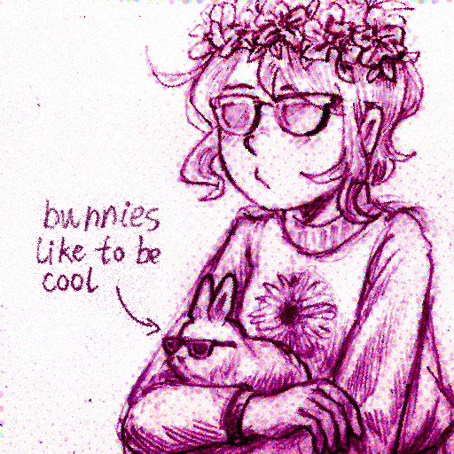

⚠️ Please note this site is designed for larger displays such as a Tablet or Desktop. ⚠️
This warning displays for users with a screen width of 720px or less.
TomatoRadio
Pondering her orb...

Hi! I'm TomatoRadio, and this page is a hub for most info about me and my works. I'm a hobbyist game and web developer who spends most of her time modding games, with my most prominent online prescence being in the OMORI modding space.
General About Me
- What are your pronouns?
- She/Her
- I'm Transfem
- They/Them is also cool
- What is your favorite color?
- This one
- Oh this one too!
- There's too many good ones...
- What is your favorite animal?
- What languages do you use?
- English
- toki pona
- Java
- JavaScript
- HTML & CSS
- A teensy bit of Python
- What games do you like?
- UNDERTALE + DELTARUNE
- OMORI
- The Orange Box
- Luigi's Mansion
- Splatoon
- Fortune Street
- Etc.
- How should I reach out to you?
- Depends on what for:
- OMORI: The MODSPACE Discord server
- Half-Life: The Whole Half-Life PMs
- Anything Else: Discord DMs
@tomatoradio


Trans Rights are Human Rights